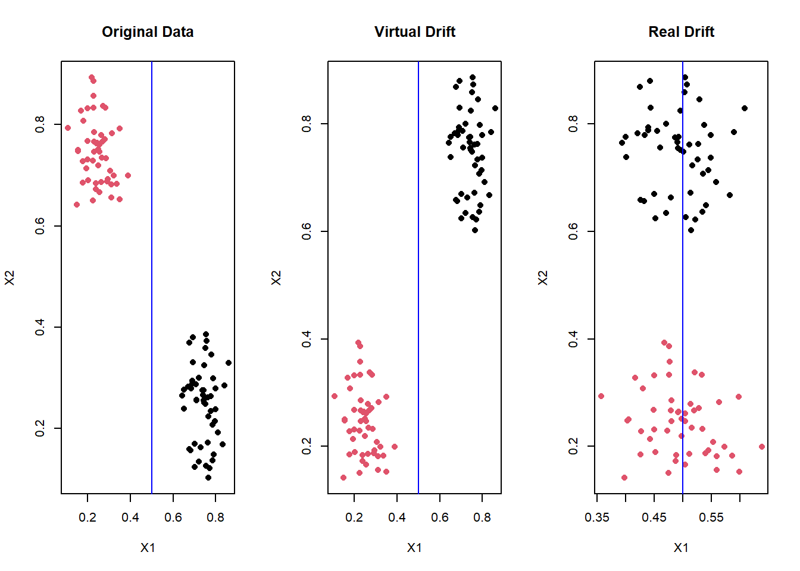
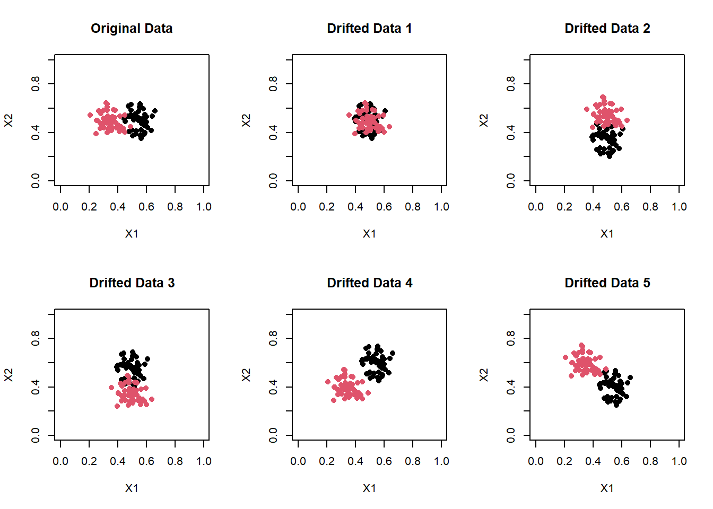
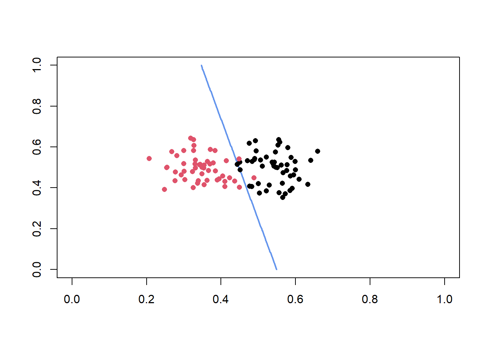
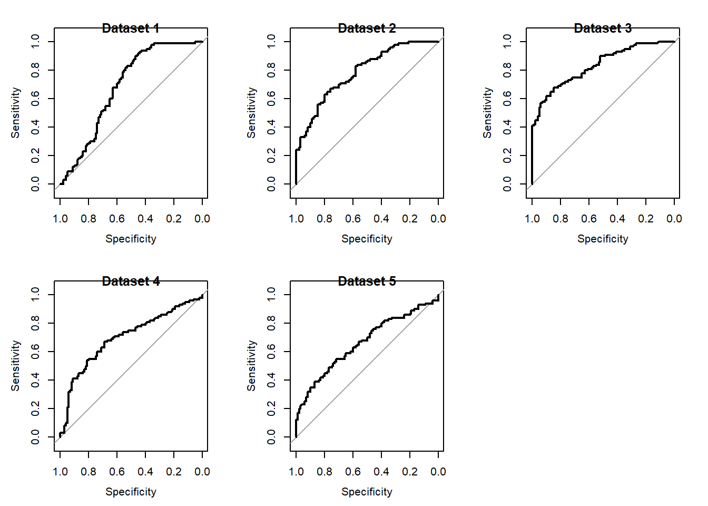

Introduction
Concept drift refers to changes in the joint distribution of of an instance \(X\) and its class \(y\)
\[ P(X,y) = P(X)P(y|X)\]
Concept drift can therefore be caused by a change in any of the two terms in the right side of the equation above.
If the drift is only due to a change in \(P(X)\), it means the distribution of the incoming data has changed but the decision boundary remains unaffected, this is referred to as virtual drift. Virtual drift does not lead to deterioration in model performance.
If the drift is due to a change in \(P(y|X)\),this affects the decision boundary of the model which in turn affects the performance of the model. This is referred to as real drift.
When ML models are deployed in production, it is essential to detect real drift so that remedial action can be taken.
The figure below gives an example of the original data and data resulting from real and virtual drift.

Drift Detection in AML
Drift detection can be supervised; this requires that we know the ground truth labels to evaluate the performance of the classifier; or unsupervised where it is not necessary to know the ground truth labels.
In many domains such as AML(Anti Money Laundering) and even in certain kinds of Fraud, there can often be a significant delay in getting the ground truth labels. In such domains,the unsupervised method is preferable. The intent of using concept drift detection in these domains is to understand any changes that might negatively impact model performance as early as possible so that model risk can be mitigated.
There are broadly three types of unsupervised drift detection methods.
- Novelty detection/clustering methods
- Multivariate Distribution Monitoring
- Model Dependent Monitoring
Method 1 is not suitable for binary classification, it is typically used in multi class classification problems where the data generating process can give rise to new classes that have not been considered hitherto.
Method 2 may not be suitable where the data is highly imbalanced such as in AML or Fraud. Given one class of labels are in the minority, changes in the distribution of this class typically does not impact the overall distribution of data.
Further both these methods assume that any change in the data distribution i.e. \(P(X)\) also causes a change in the performance of the classifier i.e. \(P(Y|X)\), this can often leads to a lot of false positives.Therefore we will focus primarily on the model based methods.
- Confidence Distribution Batch Detection (CDBD)
- Margin Density (MD)
CDBD
This is an approach that works for probabilistic classifiers by comparing the distribution of predicted scores in a test batch with that of a reference batch. The reference batch is typically the batch of instances classified immediately after the model has been trained while the test batches are data sets from some appropriate recurring time window e.g. 1 month.
The distributions are compared after discretizing them and then using a measure such as the Kullback Leibler Divergence. The measures for the test batches are compared to an appropriately chosen threshold which is derived from the reference batch.If x out of the last y test batches (e.g. 3/5) triggers the threshold, then model drift is said to have occurred. Note that in the experiment below, the distributions were not discretized.
In order to create the threshold for comparison,the distribution divergence of each of the first n test batches immediately after the reference batch and the reference batch itself are calculated. The threshold is set to one standard deviation above the mean of these divergences.
MD
Margin is the portion of the prediction space most vulnerable to misclassification. The Margin Density metric is motivated by the idea that a significant change in the density of instances occurring in a classifier’s margin is indicative of concept drift.
Margin Density is defined as follows.
\[MD = \frac{\Sigma S_{E} \left( x \right) }{|X|}; \forall x \epsilon X \]
where
\[ S_E(x) = \begin{cases} 1 & \text{if } |p(y ==+1|x) - p(y == -1|x) | \leq \theta_{margin} \\\\ 0 & \text{otherwise} \end{cases} \]
The absolute value of the change in marginal density \(|\Delta MD|\) for each new batch of data in relation to the reference batch is measured, if this exceeds some threshold, this is indicative of concept drift.
\[ if | MD_t - MD_{ref} | \gt MD_{\text{threshold}} \implies \text{drift}\ \text{suspected} ) \]
The threshold can be learned from the training data set using K-fold cross validation. It can be the mean plus N standard deviations.
Random Forest
Another method to detect concept drift is to use a predictive model(e.g. a Random Forest) to classify an observation as belonging to the training set or the incoming production dataset. If there has been no domain shift, the performance of the model should be closed to random, if the performance of the model is significantly better than random, it suggests there has been some shift in the data, we can use the random forest feature importance to identify what is driving the shift.
Experiment
Data
Simulated data will be used same as before.The original data and drifted data are as follows.

Note that Drifted Data 4 and Drifted Data 5 is a case of virtual drift, our drift detection technique should ideally not raise an alert for this type of virtual drift.
Analysis
A model is fit to the original data , the resulting decision boundary is shown below.
glm1 <- glm(class ~ ., data = data_df1,family = 'binomial')
#Grid for getting predictions
grid <- expand.grid(X1=seq(0,1,by=0.01),X2= seq(0,1,by=0.01))
grid_preds <- predict(glm1,newdata=grid,type='response')
contour(x=seq(0,1,by=0.01), y=seq(0,1,by=0.01), z=matrix(grid_preds,nrow =101),levels=0.5,
col="cornflowerblue",lwd=2,drawlabels=FALSE)
points(data_df1$X1,data_df1$X2,col=data_df1$class,pch = 16)
CDBD
We assume that the data distribution for the first 5 test batches are identical to the reference batch. Five batches of test data are therefore generated from the same distribution.
##Function to generate reference data
generate_data <- function(seed,N){
set.seed(seed)
N <- N
# Using polar coordinates
r1<- runif(N,0,0.15)
theta1 <- runif(N,0,2*pi)
r2 <- runif(N,0,0.15)
theta2 <- runif(N,0,2*pi)
#Original data
region1 <- cbind(r1 * cos(theta1) + 0.55, r1 * sin(theta1) + 0.5)
region2 <- cbind(r2 * cos(theta2) + 0.35, r2* sin(theta2) + 0.5)
data <- rbind(region1,region2)
data_df <- data.frame(data,class=as.factor(c(rep(1,N),rep(2,N))))
return(data_df)
}
test_data <- lapply(c(1:5),generate_data,50)The predictions of the model on the test data sets are as follows
test_data <- do.call(rbind,test_data)
test_preds <- predict(glm1,newdata=test_data,type='response')
test_preds_list <- split(test_preds,rep(c(1,2,3,4,5),each=100))
#predictions on original data
original_preds <- predict(glm1,type='response')The KL divergence of the original distribution with respect to the five test distributions are calculated below
library(LaplacesDemon)
KL_divergence <- rep(NA,5)
for (i in c(1:5)){
KL_divergence[i] <- KLD(original_preds,test_preds_list[[i]])$sum.KLD.px.py
}The thresholds for comparison is given by the mean + 1 SD
kl_threshold = mean(KL_divergence) + sd(KL_divergence)
cat(paste0('The kl_threshold is ',round(kl_threshold,3)))## The kl_threshold is 0.571Now the kl divergence with respect to each of the drifted data sets are computed.
drifted_data <- list(data_df2,data_df3,data_df4,data_df5,data_df6)
KL_divergence_drift <- rep(NA,5)
drifted_preds <- list()
for (i in c(1:5)){
preds <- predict(glm1,newdata = drifted_data[[i]],type='response')
drifted_preds[[i]] <- preds
KL_divergence_drift[i] <- KLD(original_preds,preds)$sum.KLD.px.py
}All three drifted data sets violate the threshold while the two datasets which showed only virtual drift did not violate the threshold.
print(KL_divergence_drift)## [1] 3.18285779 4.10382091 1.66188152 0.03246057 0.03565353print(KL_divergence_drift>kl_threshold)## [1] TRUE TRUE TRUE FALSE FALSEMD
Given the simulated data used here is balanced, the range of predictions indicating uncertainty in prediction can be considered to be anything between 0.25 and 0.75. This corresponds to \(\theta = 0.5\).
Although CV can be used, given we are working with simulated data, the margin density of the original data and five test data sets are computed.
margin_density_fn <- function(predictions,theta){
margin <- abs(predictions - (1-predictions))
margin_flag <- margin <= theta
margin_density <- mean(margin_flag)
return(margin_density)
}
preds_list <-test_preds_list
preds_list[[6]] <- original_preds
md <- sapply(preds_list,margin_density_fn,0.5)
md_threshold <- mean(md) + sd(md)
cat(paste0('The margin density threshold is ',round(md_threshold,3)))## The margin density threshold is 0.079The margin density of the drifted data sets are now computed. It can be seen that all three drifted data sets exceed the threshold, but we also have one false positive, with one of the virtually drifted datasets also triggering a false alarm.
print(md_drifted <- sapply(drifted_preds,margin_density_fn,0.5))## [1] 0.12 0.09 0.16 0.02 0.08print(md_drifted > md_threshold)## [1] TRUE TRUE TRUE FALSE TRUERandom Forest
Here we will be training the model to predict whether the data comes from the training dataset or the production dataset, so the class labels have to be appropriately updated
data_df1$partition <- 0
data_df2$partition <- 1
data_df3$partition <- 1
data_df4$partition <- 1
data_df5$partition <- 1
data_df6$partition <- 1
##Combine appropriately to create the final dataframe
data1 <- rbind(data_df1,data_df2)
data2 <- rbind(data_df1,data_df3)
data3 <- rbind(data_df1,data_df4)
data4 <- rbind(data_df1,data_df5)
data5 <- rbind(data_df1,data_df6)
##Convert target variable to a factor
data1$partition <- as.factor(data1$partition)
data2$partition <- as.factor(data2$partition)
data3$partition <- as.factor(data3$partition)
data4$partition <- as.factor(data4$partition)
data5$partition <- as.factor(data5$partition)
datasets <- list(data1,data2,data3,data4,data5)The below function takes a dataset,fits a random forest model and returns an ROC curve for each dataset.
library(randomForest)
library(pROC)
rf <- function(data){
rf_model <- randomForest(partition~X1+X2,data=data,importance=TRUE)
probs <- predict(rf_model,type = 'prob')[,2]
roc_n <- roc(data1$partition,probs)
return(list(rf_model,roc_n))
}
results <- lapply(datasets,rf)The auc for the models trained across the 5 datasets are as follows. Higher the auc, higher the domain shift,if the auc shows a steady increase over time, this can be considered as a case of domain shift. Note that this method is not able to clearly distinguish between virtual drift and real drift. Although this method seems limited in this toy example, it is likely to be far more effective for models with multiple parameters rather than just the two we have considered here.
for (i in c(1:length(results))){
print(results[[i]][[2]]$auc)
}## Area under the curve: 0.687
## Area under the curve: 0.7869
## Area under the curve: 0.8341
## Area under the curve: 0.7006
## Area under the curve: 0.6634The ROC curves are as follows
par(mfrow=c(2,3))
for (i in c(1:length(results))){
plot(results[[i]][[2]],title= paste0('Dataset ',i))
title(paste0('Dataset ',i))
}
This approach has the added advantage that you can use random forest feature importance to determine which variable is driving the shift, as long as the variables driving the shift are not of significance, then the shift is probably not of interest.
Conclusion
All these techniques are promising in their ability to detect concept drift without requiring ground truth labels
Limitations
These techniques are able to detect drift only when concept drift occurs with respect to one or more parameters in the model. If concept drift occurs due to a variable which is not part of the model becoming significant, these techniques will not be effective. Ground truth labels and accuracy metrics will be necessary to detect such drift.
When the data set is imbalanced, the threshold \(\theta_margin\) will have to be adjusted appropriately.